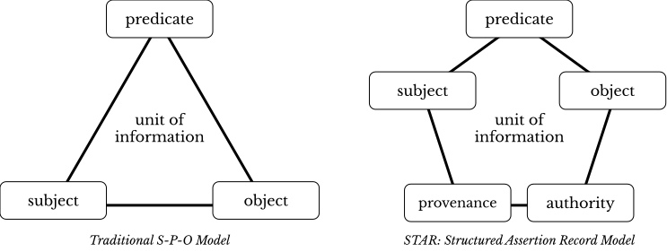

8 Deep Look into the PUA Dataset
The models of the PUA database essentially looks like the graph below.
In other words, we have::
- the main table
personajethat contains data on individuals, limited to: their names, dates, and familial affiliations (other columns are either variants of these, or not relevant to the overall analysis); - connection tables that connect individuals to different characteristics as places, disciplines, professions, etc. This is done in one-to-many format, i.e. one person may have visited multiple cities, may have specialized in multiple disciplines, etc. The main part of these tables is the two columns with ids of individuals from
personajeand ids of entities from auxiliary tables. These connection tables is what allows us to register multiple instances of the same type of data, which we simply cannot do in the main table. (One connection table,personaje_relacion, actually connectspersonajeto itself.) - auxiliary tables describe specific characteristics: places, disciplines, professions. These are the tables that provide additional information on those characteristics. For example,
lugartells us where a place is in al-Andalus or not, what are the coordinates of each place, and so on. This is also where most modeling endeavors will be taking place. - lastly, we have metadata tables, which provide metadata on sources used in the creation of the database.
8.1 Updated PUA Dataset
We may consider converting PUA dataset into a somewhat different format, where we merge the main and auxiliary tables into one table that would have a structure like this:
============================================
idPersonaje, type, value
============================================
000006, d_died_in, 163
000006, has_gender, male
000006, t_born, toponymID
000006, t_visited, toponymID
000006, has_name_AR, arabic_name
000006, has_name_CA, castellano_name
000006, has_profession, professionID
000006, has_profession, professionID
============================================Essentially, we can describe each person using this triple structure, which is interpreted as subject-predicate-object. There are standardized approaches to implement this kind of structure, like OWL RDF, but they become truly relevant only after one has finished preparing their data and is willing to share it with the world. Using OWL RDF standard will mean that you are implementing a Linked Open Data (LOD) approach. The problem of the LOD approach in our case is that we do not have anything out there to link into. For this reason, we will focus on a Linked Local Data approach, where we will link only into our own data.
Having data in this kind of format will make it easier to analyze our data, since we will not need to do too many connection (left_join) operations, which at times get too complicated. We will still need the auxiliary tables, which we will treat more as interpretative schemes, since we will be using them more for the purposes of modeling our historical data.
On the use of this structure, see: Romanov, M. (2017). Algorithmic Analysis of Medieval Arabic Biographical Collections. Speculum. https://doi.org/10.1086/693970 (The article is available at: https://www.journals.uchicago.edu/doi/full/10.1086/693970)
The structure of the new dataset will be:
8.2 Normalized and Improved PUA Dataset
Another thing that we need to do with the PUA dataset is to normalize it. We have already dealt with the issue of birth and death dates, where we find zeroes to be used when no date is available. Another issue that we also encountered was the information on gender which is “buried” in professions and characteristics. Additionally, professions (actividad) can be normalized: we have seen at least three different ways, in which jurists are described (faqīh, faqīh šāfiʿī, faqīh ẓāhirī, faqīh mālikī).
One other thing that we can do to improve the dataset is to automatically transcribe unstranscribed Arabic names—we, actually, have more than half of all the Arabic names untranscribed. This is a rather tricky procedure, which I will explain later.
8.3 Modeling PUA Dataset
The main modeling approach that we can use with the PUA dataset is categorization. As described above, we can create larger categories for professions (actividad), positions (cargo), and characteristics (caracteristica) in order to identify larger social, professional, and religious groups.
Additionally, we can add different classifications to geographical places (lugar). At the moment, places are divided into andalusian and non-andalusian. Such division allows us to trace travels outside of al-Andalus, but we can do so much more than that.
For example, it would make a lot of sense to split Andalusian places into subregions, which will allow us to aggregate individuals into larger geographical groups and, for example, measure how our individuals were moving within al-Andalus. this task is a bit tricky though (Cova?!). Classifying non-andalusian places into provinces will also be helpful as we can study into more general directions in which Andalusians were traveling. For example, base on my previous research using Taʾrīḫ al-islām of al-Ḏahabī (d. 748/1347), the general direction of travels was changing over time—essentially shifting between Ifrīqiyyaŧ (North Africa, centering on modern Tunisia) and Egypt-and-Syria region; or course, the Arabian peninsula with the Sacred cities of Islām was also very important, as was Baġdād during its heydays.
8.4 Conceptual Models for Your Data

I have mentioned above the traditional subject-predicate-object model, with which you can describe pretty much everything that you can describe with a subject-predicate-object sentence.
8.5 Implementation
Essentially, we can reformat our data into new tables/tibbles, pack them into a list on a similar manner (let’s also call it PUA for short). We can then save this new list into an RDS file, which can be loaded with readRDS() function. Additionally, we can also preserve the entire original dataset, which we can simply add as another element of the list (PUA$original).
8.6 Homework assignment
- categorization of places:
- Andalusian locations;
- Non-Andalusian locations;
- professions (
actividad); - positions (
cargo); - characteristics (
caracteristica); - “descriptive names” (
nisba);
How to do this assignment:
- you need to save the table that you are planning to work on into a TSV file;
- open it in some table editor. Perhaps, Google Spreadsheets will be the best option, since you can share your work with others, and/or work together. (On Mac, I really like
Easy CSV Editor. It is not free (€6.99), but it is worth every penny.) - add a column and create metacategories of your choice; keep in mind, that objectively there is no single correct way to do that. In real research you will go through multiple iterations of your categories. Additionally, as we discussed above, you may want/need to create multiple classifications with each suiting better for a particular research question.
- when you are done, share your tsv file.
8.7 Reference Materials
- Wickham, Hadley. 2014. “Tidy Data.” Journal of Statistical Software 59 (10). https://doi.org/10.18637/jss.v059.i10. (The article in open access)
- Check these slides: A. Ginolhac, E. Koncina, R. Krause. Principles of Tidy Data: tidyr https://lsru.github.io/tv_course/lecture05_tidyr.html (Also check their other lectures/slides: )
- Broman, Karl W., and Kara H. Woo. 2018. “Data Organization in Spreadsheets.” The American Statistician 72 (1): 2–10. https://doi.org/10.1080/00031305.2017.1375989.
The following book is a great example of modeling data for historical studies:
- Bulliet, Richard. 1979. Conversion to Islam in the Medieval Period: An Essay in Quantitative History. Cambridge: Harvard University Press.
- Morris, Ian. 2013. The Measure of Civilization: How Social Development Decides the Fate of Nations. Princeton: Princeton University Press.
- Note: This book is a methodological companion to: Morris, Ian. 2010. Why the West Rules—for Now: The Patterns of History, and What They Reveal about the Future. New York: Farrar, Straus and Giroux.
8.8 Appendix 1: PUA Data Tables
8.8.1 Main Table
personaje:: this is essentially the main and the most important table that contains information on individuals;
8.8.2 Connection Tables
The following tables are connection tables that extend the main table by encoding additional information on individuals by connecting each individual to a specific types of information, which are described in auxiliary tables.
For example, different specializations are described in the auxiliary table disciplina. The connection table personaje_disciplina connects IDs of individuals from the main personaje table with IDs of disciplines in the auxiliary table disciplina. Thus, each of these connection tables is connected to the table whose name appears after _. In some cases, these connection tables are connected to some other tables.
personaje_actividad:: activities of individuals;personaje_alias:: aliases of individuals;personaje_caracteristica:: characteristics of individuals;personaje_cargo:: positions and offices of individuals;personaje_disciplina:: specializations of individuals;personaje_fuente:: sources in which individuals are mentioned; this one is connected to the metadata tablefuente;personaje_lugar:: connections of individuals to specific geographical places; also connected totiporelacionlugar, which specify how exactly an individual is connected to a specific settlement;personaje_nisba:: associative names (nisbaŧs) of individuals that describe connection between individuals and some kind of entities. Here nisbaŧs include: geographical, tribal, familial, and misc (unclassified).personaje_obra:: books written by individuals; this one is not connected to any auxiliary table;personaje_referencia:: research publications in which individuals are mentioned; this one is actually connected to the metadata tablebibliografia;personaje_relacion:: this table describes connections between individuals;
8.8.3 Auxiliary Tables
Auxiliary tables describe categorical entities through which individuals in the prosopographical section are described. In most cases individuals can be associated with multiple categories from each entity type (for example, individuals live in and visit multiple settlements), which requires one-to-many relationships.
actividad:: types of activities;caracteristica:: types of personal characteristics;cargo:: types of positions and offices;disciplina:: types of specializations;familia:: families; there is no separate table; family information is encoded in the mainpersonajetable, since it is one-to-one relationship;keywords:: ???lugar:: settlements like villages, cities, islands;nisba:: associative/descriptive names (nisbaŧs);tiporelacion:: this table described types of relationships with individuals;tiporelacionlugar:: this table described types of relationships with settlements;
8.8.4 Metadata Tables
The following two tables do not have any information on individuals; rather they provide metadata on sources used in the creation of the database.
autor:: this table contains information on authors of primary sources used in the project;fuente:: this table provides detailed information on each primary source;bibliografiA:: this is the main bibliographical data of secondary sources of the project;